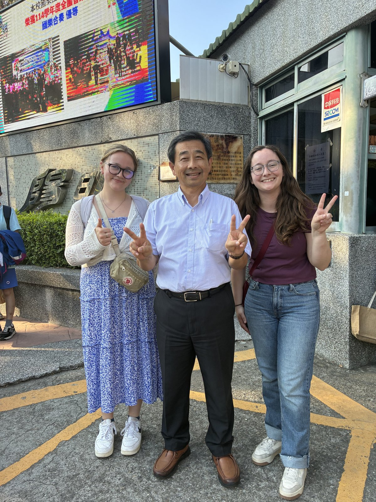

Featured · 重點
The faculty lead & the Yangming story
 ▶
Faculty Lead · 帶隊教授
▶
Faculty Lead · 帶隊教授Professor David Boe
The NMU faculty member who led the cohort and visited Xizhou Junior High — introducing himself to Taiwan's students and teachers. 帶領師資生並來訪溪州國中的 NMU 教授，向臺灣師生自我介紹。

Practicum Story · 陽明國中Welcome to Yangming — Mila & Hannah
Two NMU student teachers spent three weeks at Yangming Junior High — observation, co-teaching, and leading the room. Read the full story. 兩位 NMU 實習老師在陽明國中度過三週：觀課、協同教學到獨立授課。閱讀完整報導。
Read the practicum story →